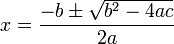

Gyakorlat, 3. hét: egyszerű programok
Czirkos Zoltán · 2015.02.18 · Frissítve: 2015.02.15
Egyszerű C programok és vezérlési szerkezeteik. Számok beolvasása és kiírása.
Ezen a héten már C programokat írunk.
Felkészülés a gyakorlatra:
- A bevezető előadás, és
- a vezérlési szerkezetekről szóló előadás anyagának megértése.
1Másodfokú egyenlet gyökei
Adott egy ax2+bx+c=0 alakúra hozott másodfokú egyenlet; határozzuk meg a valós gyökeit. Vegyük figyelembe azokat az eseteket, amikor nincsen valós gyök!
Megoldás
A megoldóképlet az alábbi. Arra kell figyelni, hogy ne vonjunk negatív számból négyzetgyököt. A gyökvonás előtt a diszkrimináns vizsgálatával meg kell néznünk, hány valós megoldás lesz.
Itt egy nagyobb C kifejezést kapunk, amiben többféle operátor (összeadás, kivonás, szorzás stb.) szerepel. Ezeknek a műveleteknek C-ben ugyanúgy van precedenciája, mint a matematikában. A szorzás pl. magasabb rendű művelet, mint az összeadás. A C nyelv precedencia szabályai összetettebbek; erről majd előadáson lesz szó.
#include <math.h>
#include <stdio.h>
int main(void) {
double a, b, c;
double diszkr;
printf("a="); scanf("%lf", &a);
printf("b="); scanf("%lf", &b);
printf("c="); scanf("%lf", &c);
/* a diszkriminans: bnegyzet - 4ac */
diszkr=b*b-4*a*c;
/* ha <0, 2 komplex gyok lenne */
if (diszkr<0) {
printf("Nincs valos gyok!\n");
}
else {
/* ha pont 0, akkor 1 megoldas van */
if (diszkr==0) {
printf("Egy valos gyok: %f\n", -b/(2*a));
}
else {
/* ha ide elerunk, akkor csak pozitiv lehet */
printf("Ket gyok: %f, %f\n",
(-b+sqrt(diszkr))/(2*a),
(-b-sqrt(diszkr))/(2*a));
}
}
return 0;
}
Az if (diszkr==0) vizsgálat elméletben helyes, gyakorlatban azonban nem előnyös
ilyet írni. A kerekítési hibák miatt előfordulhat az, hogy 0-hoz olyan közeli szám adódik, amit
már 0-ra kerekít a számítógép. Erről később lesz szó előadáson.
2Tükörszámok
A feladat a következő: írjuk ki azokat a háromjegyű számokat, amelyek megegyeznek a tükörképükkel. Például a 121 ilyen, a 123 nem. Rajzoljunk struktogramot a programhoz!
Megoldás
Az okos megoldás itt az, ha rájövünk, hogy végülis ezek a számok úgy alakulnak ki, hogy 10-től 99-ig számolunk, és minden szám mellé odaírjuk még egyszer az első számjegyet (pl. 10 mellé az 1-et, 101, vagy 57 mellé az 5-öt, 575). Érdemes ehhez két egymásba ágyazott ciklust írni. Az első számjegy nem lehet 0-s, a második, középső viszont igen, erre figyelni kell.
Megfigyelhetjük azt, hogy mindkét ciklus számlálásos jellegű: a külső 1-től 9-ig megy, a belső 0-tól 9-ig. Az alsó ábra egy nem szabályos, de nagyon szemléletes rajzot tartalmaz. Hasonlítsuk össze a két megoldást áttekinthetőség szempontjából!
#include <stdio.h>
int main(void) {
int a, b;
a=1;
while (a<10) {
b=0;
while (b<10) {
/* aba: tükörszám! */
printf("%d%d%d ", a, b, a);
b=b+1;
}
a=a+1;
}
return 0;
}
#include <stdio.h>
int main(void) {
int a, b;
for (a=1; a<=9; a=a+1)
for (b=0; b<=9; b=b+1)
/* aba: tükörszám! */
printf("%d%d%d ", a, b, a);
return 0;
}
3Háromszög golyókból
o ooo ooooo
Láttuk az eddigiek során, hogy a képernyőre balról jobbra, fentről lefelé haladva tudunk írni, ahogy a kézírással is. Ebből kiindulva írjunk programot, amely kér a felhasználótól egy számot (n), és utána egy akkora háromszöget rajzol a képernyőre „o” betűkből, hogy annak éppen a megadott számú sora van! Például n=3 esetén az oldalt látható ábra keletkezzen.
Megoldás
A feladat megoldásának kulcsa egy rajz készítése… És annak meghatározása, hogy melyik sorban hány golyó és hány szóköz van. Aki ide eljut, annak nyert ügye van.
#include <stdio.h>
int main(void) {
int magas;
int sor, x;
printf("Milyen magas legyen a kupac? ");
scanf("%d", &magas);
/* sorok ciklusa */
for (sor=0; sor<magas; sor=sor+1) {
/* a sor elejen kell valamennyi szokoz */
for (x=0; x<magas-sor-1; x=x+1)
printf(" ");
/* utana valahany darab o */
for (x=0; x<sor*2+1; x=x+1)
printf("o");
/* sor vege */
printf("\n");
}
return 0;
}
4Prímtényezős felbontás
75│3 25│5 5│5 1│
Az első gyakorlati órán volt szó az általános iskolában tanult prímtényezős felbontás
algoritmusáról. C-ben a % operátorral jelöljük az osztás maradékát (osztandó%osztó
→ maradék, pl. 9%7 értéke 2). Írjunk egy programot C-ben, amelyik
kér egy számot a felhasználótól, és kiírja a prímtényezős felbontását!
Ha kész van, hasonlítsuk össze azzal a pszeudokóddal, amit az első gyakorlaton írtunk!
Megoldás
A lenti megoldás mindig egy egész sort ír ki, pl. 150|2. Egy kiírás akkor történik meg, amikor az oszthatóságot már megvizsgáltuk, és a maradék nullának adódott. A 150|2 azt jelenti, hogy a 150-et osztjuk el 2-vel; ezért a konkrét osztás előtt írjuk ki a sort, hogy még az osztás előtti szám látszódjon. Így aztán az utolsó sort, amelyben az 1-es van, külön utasítással kell kiírni.
#include <stdio.h>
int main(void) {
int szam, oszto;
printf("Melyik számot? ");
scanf("%d", &szam);
oszto=2;
while (szam>1) {
if (szam%oszto==0) { /* ha osztható */
printf("%5d|%d\n", szam, oszto);
szam=szam/oszto;
}
else
oszto=oszto+1; /* ha nem */
}
printf("%5d\n", 1);
return 0;
}
Esetleg logikusabb lehet az, ha mindig kiírjuk előre a számot, osztani fogunk, és az oszthatóság vizsgálata után már csak az osztót. Ez is helyes megoldás. Ilyenkor az eredeti számot ki kell a ciklus előtt külön. A végén viszont az 1-et nem, mert az a legutolsó osztásnál megjelenik:
#include <stdio.h>
int main(void) {
int szam, oszto;
printf("Melyik számot? ");
scanf("%d", &szam);
oszto=2;
printf("%5d|", szam);
while (szam>1) {
if (szam%oszto==0) { /* ha osztható */
printf("%d\n", oszto);
szam=szam/oszto;
printf("%5d|", szam);
}
else
oszto=oszto+1; /* ha nem */
}
return 0;
}
Érdemes mindkét változat működését végiggondolni, papíron követni vagy nyomkövetővel kipróbálva megvizsgálni!
5Római számok
Írjunk egy programot, amely kér a felhasználótól egy tízes számrendszerben megadott számot, utána pedig kiírja annak megfelelőjét római számokkal. Pl. 88→LXXXVIII. Elég csak 99-ig; ha 100-at, vagy annál nagyobbat írt be a felhasználó, akkor szóljunk neki, hogy csak 99-ig működik a program.
Megoldás
Rajzoljunk folyamatábrát vagy struktogramot a programhoz! Először írjunk pár példát római számra, és figyeljük meg, milyen sorrendben kell kiírni az egyes értékeket jelző betűket és betűpárokat! Vegyük észre, hogy az XC (90) csak egyszer szerepelhet, míg pl. az X (10) többször is!
#include <stdio.h>
int main(void) {
int x;
printf("Mi a szám? ");
scanf("%d", &x);
if (x<1)
printf("Pozitiv szamot kerek!\n");
else if (x>99)
printf("Csak 99-ig tudom.\n");
else {
if (x>=90) { printf("XC"); x=x-90; }
if (x>=50) { printf("L"); x=x-50; }
if (x>=40) { printf("XL"); x=x-40; }
while (x>=10) { printf("X"); x=x-10; }
if (x>=9) { printf("IX"); x=x-9; }
if (x>=5) { printf("V"); x=x-5; }
if (x>=4) { printf("IV"); x=x-4; }
while (x>=1) { printf("I"); x=x-1; }
printf("\n");
}
return 0;
}
Lehetne máshogy is? Mi történne, ha mindenhol ciklust használnánk? Láthatóan mindegyik számjegynél ugyanazt kell csinálni (kiírni és csökkenteni), ezért aztán a program egy nagy sorminta lett. Egy későbbi gyakorlaton majd javítunk ezen, most egyelőre még hiányzik hozzá a megfelelő C nyelvi eszköz.